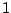
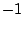
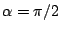
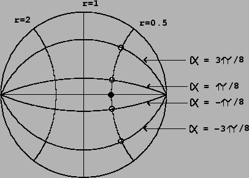
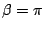
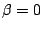
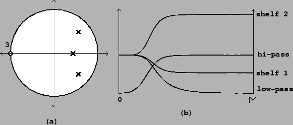

A filter with one real pole and one real zero can be configured as a shelving filter, as a high-pass filter (putting the zero at the point ) or as a low-pass filter (putting the zero at ). The frequency responses of these filters are quite blunt; in other words, the transition regions are wide. It is often desirable to get a sharper filter, either shelving, low- or high-pass, whose two bands are flatter and separated by a narrower transition region.
A procedure borrowed from the analog filtering world transforms real, one-pole, one-zero filters to corresponding Butterworth filters, which have narrower transition regions. This procedure is described clearly and elegantly in the last chapter of [Ste96]. The derivation uses more mathematics background than we have developed here, and we will simply present the result without deriving it.
To make a Butterworth filter out of a high-pass, low-pass, or shelving
filter, suppose that either the pole or the
zero is given by the expression
Then, for reasons which will remain mysterious, we replace the point (whether
pole or zero) by  points given by:
points given by:
A good estimate for the cutoff or transition frequency defined by
these circular collections of poles or zeros is simply the spot where the
circle intersects the unit circle, corresponding to
. This gives
the point
|  |
Figure 8.18 (part a) shows a pole-zero diagram and frequency response for a Butterworth low-pass filter with three poles and three zeros. Part (b) shows the frequency response of the low-pass filter and three other filters obtained by choosing different values of (and hence ) for the zeros, while leaving the poles stationary. As the zeros progress from  to , the filter, which starts as a low-pass filter, becomes a shelving filter and then a high-pass one.
|  |